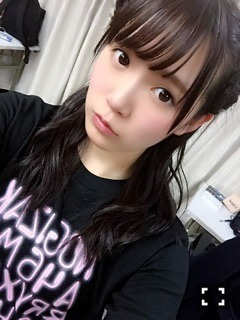
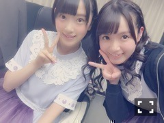
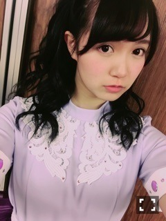

| 2015/12 22 Tue | ひめたん-0o0-その598 |
クリスマスショー終わりました！
武道館に来てくださった方も
スカパーで観てくださった方も
ありがとうございました( ˇωˇ )～♪

いえーい中3組！
書きたいことはたくさんあるんですが
個人的なお話をするなら......
1日目の妄想クリスマス
めっちゃ楽しかった(´｡•ω•｡`)♡♡
最初に話を聞いた時は
うおー恥ずかしいやつだーとか
生だ一発でキメなあかんやつやーとか
リハは超緊張してましたが
お相手さんのテンションにつられて
私まで楽しくなってきました♡
こんなクリスマス体験できないからね♡
そして「大人への近道」ライブ初披露！
あの大きなステージに
5人だけで歌ってるのがなんとも新鮮で
きいちゃんと目が会うたびに
にこにこしながら歌わせていただきました～
1日目はらじらーで決まった
自己紹介もちゃんとできました！
あなたに一番近い星、
サンクエトワールです☆
そうだ、サンエトのインストアライブが
決まったのであとで詳しく書きますね！！
やさしさとは、君僕、大人への近道と
私にとって思い入れのある楽曲が
たくさん披露できたの嬉しかったなあ～
ひめたんが出てくる度に
ぴんくのサイリウムたくさん見えて
もう、びっくりしました(^o^)！
私もひとりひとりに届け～～！って
思いながらパフォーマンスしたつもりです
届いていたらいいな。
あ、サプライズもいくつかありましたが
その中で2日目に発表されました、
全員で紅白のステージに立つことが
決定致しました！
ありがたいことですね( ´•̥ω•̥` )
モニターに写った
「37名全員で紅白へ！」の文字と
会場の皆さんの大きな歓声で
初めて実感が沸きました......。
頑張ります！
ということで、
無事4日間完走しました＼(^o^)／
応援してくださった皆さん
本当にありがとうございました！
この気持ち、伝われ......！

日曜の夜はらじらー！サンデー
前回は武道館から藤森さんが
生中継してくださったよ～
会場に行けなかった方にも
雰囲気は楽しんでいただけたのかな？
というか全編聞きたい！何があったのさ！笑
そして乃木坂から
伊藤万理華ちゃん、井上小百合ちゃんが
スタジオに来てくれました～！
温泉トリオ改め......なんだっけ。笑
なんかもう3人とも色々おかしかったけれど
割といつもあんな感じです。笑
びっくりした方も中にはいるかもだけど
割と素で喋ってます。割と。
前から二人を呼びたかったから
今回叶って良かった！
まった来ってね～♡
来週は公開収録ですよろしくねー！

嫉妬の権利の衣装、
武道館アンダーライブで初公開でしたー！
写メは未央ちゃんとです～
今回は未央ちゃんに助けられたライブでした
本当にありがとう♡
さあ、ここでひとつお知らせ！
改めて、んんっごほんっ、
サンクエトワールでのインストアイベント
決定しました＼(^o^)／ひゃっふーい
12/24 お台場MEGA WEB
12/25 ラゾーナ川崎
両日とも、こんなに大きな会場で
皆さんに会えるなんて幸せです
素敵な時間が過ごせますように。
クリスマスイブ、クリスマスですね
私はみなさんとクリスマスしたいよ♡
なーんて♡へへ♡
ライブとサイン会があります！
ライブはフリーです！みんな観れるよう！
ここだけの話なので小さい声で言うよ、
2日とも違うセトリだよ。ふふ。
サイン会はMV集を
お買い求め下さった方に
5人全員のサインを入れさせて頂きます！
サンエトちゃんとしての活動が
またひとつ出来るなんて幸せ～
是非遊びに来てください＼(^o^)／
詳細は公式サイトを見てみてね。

OVERTURE！オフショット！
～お知らせ～
12/18 乃木坂46物語
12/19 OVERTURE
12/22 GiRL POP 2016 WINTER
12/25 FLASHスペシャル
12/29 月刊エンタメ
それでは、
インストアイベントに
名古屋全握個握に
らじらー公開生放送と
皆さんに会える一週間なのかな( ˇωˇ )？♡
楽しみにしてます！
握手会ちょっと久々だから、
たくさんお話できるかなー？
メリークリスマス！！

ほんとこの衣装すき。
前回の日記にアンダーライブの感想
たくさんありがとうございます。
毎日少しずつ読んで
毎日泣きそうになってます。
最近涙腺が弱いんだ。へへ。
そいえば
前回の日記に書いてなかったことを
少しだけ追加で。
アンダーライブでは
センター企画復活させまして、私は
「春のメロディー」を歌わせて頂きました！
あんなにぴんくに染まった会場、
もう言葉では言い表せないくらい、
本当に感動して心から楽しく歌えました！
そして私自身、何年も何回も、
春メロ歌唱してきたけれど
さらに大好きな歌になりました♡
かなりん、応援してくれてありがとう！
(＊´・ω・＊)
コメント(739)
2015/12/22 23:54